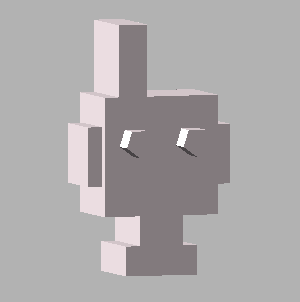

<div class="bitzbotMakerContent">
  <div id="bitzbotMaker" ng-controller="MakestationController as makeCtrl">
    <div>Select your Bit-z-Bot's face, body and legs!</div>
    <form name="form" class="botMakerForm" novalidate>
      <!-- BITZBOT FACE -->
      <div id="faceCarousel" class="carousel slide" data-interval="false">
        <!-- Carousel indicators -->
        <ol class="carousel-indicators">
            <li data-target="#faceCarousel" data-slide-to="0" class="active"></li>
            <li data-target="#faceCarousel" data-slide-to="1"></li>
            <li data-target="#faceCarousel" data-slide-to="2"></li>
        </ol>
        <!-- Wrapper for carousel items -->
        <div class="carousel-inner">
            <div class="item active">
                  <label><input type="radio" ng-model="bot.face" value="face1" /></label>
            </div>
            <div class="item">
              <label><input type="radio" ng-model="bot.face" value="face2" /></label>
            </div>
            <div class="item">
                <label><input type="radio" ng-model="bot.face" value="face3" /></label>
            </div>
        </div>
        <!-- Carousel controls -->
        <a class="carousel-control faceCtrl left" href="#faceCarousel" data-slide="prev">
            <span class="glyphicon glyphicon-chevron-left faceCtrl"></span>
        </a>
        <a class="carousel-control faceCtrl right" href="#faceCarousel" data-slide="next">
            <span class="glyphicon glyphicon-chevron-right faceCtrl"></span>
        </a>
      </div>

      <!-- BITZBOT BODY -->
      <div id="bodyCarousel" class="carousel slide" data-interval="false">
        <!-- Carousel indicators -->
        <ol class="carousel-indicators">
            <li data-target="#bodyCarousel" data-slide-to="0" class="active"></li>
            <li data-target="#bodyCarousel" data-slide-to="1"></li>
            <li data-target="#bodyCarousel" data-slide-to="2"></li>
        </ol>
        <!-- Wrapper for carousel items -->
        <div class="carousel-inner">
            <div class="item active">
                  <label><input type="radio" ng-model="bot.body" value="body1" /></label>
            </div>
            <div class="item">
              <label><input type="radio" ng-model="bot.body" value="body2" /></label>
            </div>
            <div class="item">
              <label><input type="radio" ng-model="bot.body" value="body3" /></label>
            </div>
        </div>
        <!-- Carousel controls -->
        <a class="carousel-control left" href="#bodyCarousel" data-slide="prev">
            <span class="glyphicon glyphicon-chevron-left"></span>
        </a>
        <a class="carousel-control right" href="#bodyCarousel" data-slide="next">
            <span class="glyphicon glyphicon-chevron-right"></span>
        </a>
      </div>

      <!-- BITZBOT LEGS -->
      <div id="legsCarousel" class="carousel slide" data-interval="false">
        <!-- Carousel indicators -->
        <ol class="carousel-indicators">
            <li data-target="#legsCarousel" data-slide-to="0" class="active"></li>
            <li data-target="#legsCarousel" data-slide-to="1"></li>
            <li data-target="#legsCarousel" data-slide-to="2"></li>
        </ol>
        <!-- Wrapper for carousel items -->
        <div class="carousel-inner">
            <div class="item active">
                  <label><input type="radio" ng-model="bot.legs" value="legs1" /></label>
            </div>
            <div class="item">
              <label><input type="radio" ng-model="bot.legs" value="legs2" /></label>
            </div>
            <div class="item">
              <label><input type="radio" ng-model="bot.legs" value="legs3" /></label>
            </div>
        </div>
        <!-- Carousel controls -->
        <a class="carousel-control left" href="#legsCarousel" data-slide="prev">
            <span class="glyphicon glyphicon-chevron-left"></span>
        </a>
        <a class="carousel-control right" href="#legsCarousel" data-slide="next">
            <span class="glyphicon glyphicon-chevron-right"></span>
        </a>
      </div>


      <input type="submit" ng-click="makeCtrl.make(bot)" class="makeButton" value="MAKE" />
    </form>
  </div>
  <div class="readyIndicatorWrapper">
    <div id="readyOne" class="readyIndicator" ng-class="{'partReady': makeCtrl.faceIsReady}">{{makeCtrl.faceIsReady}}</div>
    <div id="readyTwo" class="readyIndicator"></div>
    <div id="readyThree" class="readyIndicator"></div>
  </div>
</div>
